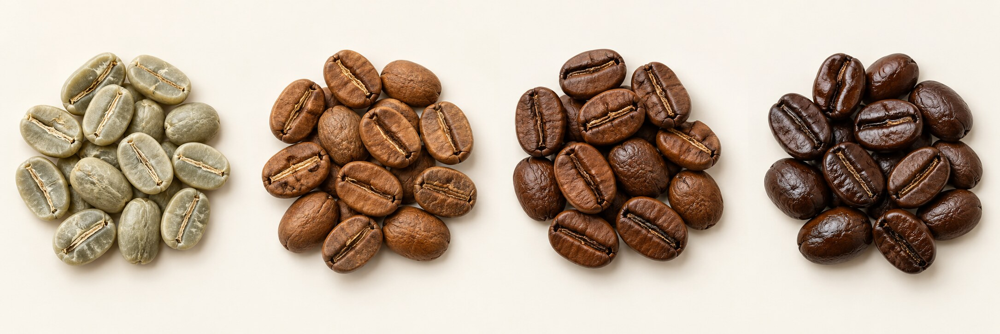

تعرف مراحل التحميص، وتختار نقطة نهاية قابلة للتكرار، ثم تقارن أثرها في الكوب. اللون والوقت والطاقة والهواء تُقرأ معًا، وليست هناك حرارة نهاية واحدة تناسب كل بن ومحمصة.
يتضمن الدليل خطة تجربة لثلاث درجات، مع نموذج قياس وتذوق وتشخيص للعيوب. الخطة لم تُنفّذ على بنّك؛ الأمثلة الحسابية تعليمية، وليست نتائج تجارب مقاسة.
ابدأ بدليل جهازك ودفعة مرجعية مناسبة له. الحدود، التهوية، وزن التشغيل وروتين الصيانة تتبع الشركة المصنّعة. [١،٣،٥]
حبة القهوة الخضراء بذرة قبل التحميص، وليست درجة حمصة لمشروب القهوة المعتاد. يختلف اللون حسب الصنف والمعالجة والتجفيف والتخزين؛ لذلك لا تقارن لون خامين مختلفين وكأنه مقياس جاهز للجودة.
| سجّل قبل البداية | لماذا يهم؟ |
|---|---|
| المحصول، المنشأ، الصنف والمعالجة | حتى تتأكد أنك تقارن نفس المادة الخام، لا محصولين مختلفين. |
| تاريخ الوصول وحالة التخزين | لفهم التغير مع الوقت والمحافظة على ظروف المقارنة. |
| الرطوبة والكثافة إن كانتا مقاستين | قد تساعدان في تفسير استجابة البن. اكتب «غير مقاس» إذا لم تتوفر أدوات قياس. |
| الوزن، سعة المحمصة ونوع الحساس | لمنع نقل إعدادات دفعة أو جهاز إلى جهاز مختلف دون اختبار. |
| عيّنة خام محفوظة ورمز التجربة | لتوثيق اللون والحجم قبل التحميص وربط النتائج بالدفعة الصحيحة. |
في المغسول تزال الثمرة قبل التجفيف، وفي المجفف تجف الكرزة كاملة، وفي العسلي تبقى كمية من الطبقة اللزجة. اسم «عسلي» لا يعني إضافة عسل. المعالجة وحدها لا تحدد وصفة التحميص. [١٤]
استخدم ميزانًا ثابتًا وروتينًا موحدًا للتسخين والتبريد. افصل الوصف الذي شاهدته عن القياس: «بني فاتح بالعين» وصف، بينما رقم جهاز لون معاير قياس يحتاج طريقة معلنة.
راقب اللون والرائحة والصوت مع المنحنى. العلامات الحسية تساعدك على فهم المراحل، لكن توقيتها يعتمد على البن والجهاز والحساس. [٢،٣]
| المرحلة | ما تراقبه | ما تسجّله |
|---|---|---|
| الأخضر ثم الاصفرار | تحول تدريجي في اللون والرائحة وخروج الرطوبة. الاصفرار لا يثبت أن كل الماء خرج. | وقت ولون الاصفرار مع وصف واضح لمعيارك. |
| الاسمرار | تفاعلات حرارية ومنها ميلارد بين السكريات المختزلة والمركبات الأمينية. | مسار الحرارة وتغييرات الطاقة والهواء. |
| الفرقعة الأولى | تمدد وبنية تتغير مع صوت متتابع؛ قد يكون الصوت أوضح في بعض الأجهزة. | وقت البداية حسب تعريف ثابت تستخدمه لكل الدفعات. |
| التطوير ونقطة النهاية | استمرار التحولات بعد الفرقعة. اللون المطلوب والطعم أهم من مطاردة نسبة مفردة. | وقت الإنزال، القراءة من نفس الحساس واللون. |
| التبريد | خفض الحرارة سريعًا حسب النظام المناسب للجهاز؛ استمرار الحرارة قد يغير النهاية. | روتين ومدة التبريد ووقت الوزن بعده. |
التحميص الفاتح ليس تلقائيًا ناقص التطوير، والفرقعة الثانية ليست شرطًا لكل حمصة غامقة. لا تنتظر التفحم للحصول على لون أغمق. [١،٢]
لا تنقل أرقام حرارة هواء IKAWA إلى حساس بن أو IBTS في جهاز آخر. اختلاف مكان ونوع الحساس يغير معنى القراءة، حتى لو تشابه رقمها. [٦]
| الهدف | كيف تصل له عمليًا؟ | كيف تتحقق؟ |
|---|---|---|
| أخضر | احتفظ بعينة من المادة الخام دون تحميص. | اربطها بنفس رقم المحصول والدفعة. |
| بني فاتح | استخدم مسارًا مرجعيًا مناسبًا لمحمصتك، وحدد نهاية فاتحة مع تطوير مناسب ثم تبريد ثابت. | لون جاف غالبًا، وفحص حبة كاملة ومطحونة ثم تذوق. |
| بني متوسط | ابدأ من المرجع الناجح، وعمّق النهاية تدريجيًا مع تثبيت باقي عوامل المقارنة قدر الإمكان. | لون أعمق، ثم مقارنة وصفية للكوب أمام العينة الفاتحة. |
| بني غامق | تابع الطاقة والهواء والدخان بدقة ضمن دليل جهازك. حدّد نهاية داكنة ثم برّد عندها. | قد يظهر لمعان زيتي؛ راقب النكهة وأي أثر حرق أو تجفيف. |
لون التحميص يتأثر بالإضاءة والكاميرا والشاشة، وقد يختلف لون السطح عن لون البن المطحون. إذا توفر جهاز معاير، وحّد الطحن ووقت القياس وطريقة أخذ العينة. دون جهاز، استخدم نفس الإضاءة وخلفية محايدة ووصفًا نسبيًا؛ لا تستنتج رقم Agtron من صورة. [٧]
يمكن أن تتشابه عينتان في اللون وتختلفا في زمن ومسار التحميص والطعم. دراسة العلاقة بين الوقت واللون تدعم مقارنة هذين العاملين بدل اعتبار اللون وحده وصفًا كاملًا للحمصة. [٨]
قد يُظهر الفاتح شخصية المنشأ والحموضة أكثر، بينما يبرز الغامق طابع التحميص. هذه ميول عامة، وليست ضمانًا لنكهة بعينها أو ترتيبًا للجودة. [١]
الطاقة تدخل إلى النظام، والهواء يشارك في انتقال الحرارة وإزالة الرطوبة والدخان. زيادة المروحة لا تعني دائمًا تبريد البن؛ الأثر يعتمد على تصميم المحمصة وحرارة الهواء. وزن الدفعة بدوره يغير الاستجابة. ابدأ ضمن مجال الشركة ثم اختبر تغييرًا محددًا. [٣،٥]
هو معدل تغير قراءة الحرارة لكل دقيقة. مثال حسابي: ارتفاع القراءة من ١٧٠ إلى ١٧٦ خلال دقيقة يعطي ٦ درجات/دقيقة. المثال لا يحدد هدفًا لكل مراحل التحميص. نوع الحساس وتنعيم البيانات يؤثران في الرسم؛ ثبّتهما عند المقارنة. [٣،٦]
| عامل | طريقة الاختبار |
|---|---|
| الطاقة | سجّل وقت كل تغيير ومستواه. قارن تغييرًا واحدًا في نافذة محددة مع دفعة مرجعية. |
| الهواء | ثبّت باقي الإعدادات قدر الإمكان. سجّل اللون والزمن والطعم؛ لا تفترض النتيجة من رقم المروحة وحده. |
| حجم الدفعة | ثبّت الوزن في تجربة اللون. إذا تغيّر، ابدأ تجربة جديدة بدل دمج نتائجه مع المرجع. |
| الحساس والمنحنى | سجّل نوع القراءة ومعدل تسجيلها والتنعيم. لا تفسر كل هبوط أو قفزة كعيب مذاق مثبت. |
إذا انحرفت حمصة عن المرجع، راجع التسخين ودرجة المحيط والدخان ونظافة مسار الهواء قبل تغيير عدة إعدادات. أعمال الفك والصيانة وحدود التشغيل تتبع دليل الجهاز. [٤]
سؤال التجربة: كيف يتغير الطعم عند اختيار ثلاث نقاط نهاية لنفس البن على نفس المحمصة؟ هذه تجربة نهاية حمصة، وليست تجربة لعزل أثر كل تفاعل كيميائي. المتغير المقصود هو نقطة النهاية، وستسجّل معها الزمن واللون وفقد الوزن.
نتيجتك تخص هذا البن وهذا الجهاز وهذا الروتين. يمكن أن تقول «فضّلت العينة ب في هذه المقارنة»، لكن لا تعمم «الحمصة المتوسطة أفضل لكل البن». إذا تغيّرت أكثر من قيمة، اكتبها كاختلاف في البروتوكول.
استند تصميم المقارنة إلى فصل الوقت واللون في البحث، وتوحيد ظروف التقييم الحسي. [٨،١٠]
| البيان | ما تكتبه |
|---|---|
| مرجع المحمصة | الموديل، رقم الملف، الحساس، التسخين ودرجة المحيط. |
| أحداث الحمصة | الاصفرار، بداية الفرقعة الأولى، الإنزال، وما تعنيه «البداية» عندك. |
| الإعدادات | وقت كل تغيير للطاقة أو الهواء أو سرعة الأسطوانة إن كانت متاحة. |
| قبل وبعد | وزن الأخضر، وزن المحمّص بعد تبريد موحد، مدة التبريد وتاريخ التحميص. |
| اللون | وصف بالعين تحت إضاءة ثابتة أو قراءة معايرة مع بيان طريقة العينة. |
فقد الوزن % = (وزن الأخضر − وزن المحمّص) ÷ وزن الأخضر × ١٠٠.
مثال حسابي: ٥٠٠ غ قبل التحميص و٤٢٥ غ بعده تعطي فقدًا ١٥%. المثال ليس هدفًا لجودة الحمصة.
وقت التطوير = وقت الإنزال − وقت بداية الفرقعة الأولى.
DTR % = وقت التطوير ÷ وقت الحمصة الكلي × ١٠٠.
فرقعة عند ٨:٠٠ وإنزال عند ١٠:٠٠ تعطي دقيقتين و٢٠%. نفس النسبة قد تصف مسارين مختلفين، وليست قيمة سحرية. [٨]
لا تخمن قيمًا لم تُقَس. خانة فارغة أو «غير مقاس» أدق من رقم يبدو كاملًا. زمن الحمصة يحتاج نقطة بداية محددة، ووزن ما بعد التحميص يحتاج توقيتًا ثابتًا.
استخدم رموز أ، ب، ج. سجّل الرائحة والنكهة والحموضة والمرارة والحلاوة والقوام والأثر اللاحق، ثم تفضيلك في خانة منفصلة. الإيحاءات تشابه حسي وليست دليلًا على إضافة فاكهة أو شوكولاتة. المعجم الحسي يعطي لغة للمقارنة، وCVA يفرق الوصف عن الانطباع عن الجودة. [٩،١٠]
| الملاحظة | ماذا تفحص قبل القرار؟ |
|---|---|
| بقع سوداء موضعية أو أطراف متفحمة | شكل الحبة والطاقة المبكرة والتلامس وحركة الدفعة؛ قد تكون تلسيعًا أو tipping. [٢] |
| نكهة عشبية أو تجفيف قوي | افحص مسار التطوير، ثم الطحن والماء والاستخلاص؛ لا تعالج كل حموضة بزيادة التحميص. [٢،١٣] |
| نكهة مسطحة أو غير واضحة | قارن الماء والتخزين والراحة والوصفة ثم المنحنى. طول الحمصة وحده لا يثبت baked. [١١،١٢] |
| مرارة أو طابع حرق | قارن نهاية أفتح، وافحص الاستخلاص والعينة قبل تعديل عدة عوامل معًا. [١،١٣] |
| اختلاف كبير بين تكرارين | راجع البروتوكول وحرارة النظام والتبريد. كرر التجربة قبل اعتماد التفسير. |
قد تتغير ملاحظاتك مع برودة الكوب. استخدم كلمات قليلة متكررة بدل البحث عن كل إيحاء مكتوب على العبوة. دوّن قوة الإحساس ومتى ظهر.
لا تحول ملاحظة كوب واحد إلى تشخيص قاطع. وصف اللون أو المنحنى يساعد في بناء فرضية، ثم تختبرها بدفعة تالية.
تُملأ أثناء العمل. جميع الخانات فارغة عمدًا؛ لا تمثل نتائج فعلية.
| القياس | أ: فاتح | ب: متوسط | ج: أغمق |
|---|---|---|---|
| وزن الأخضر / المحمص | |||
| الاصفرار | |||
| الفرقعة الأولى | |||
| الإنزال / الوقت الكلي | |||
| وقت التطوير / DTR | |||
| فقد الوزن | |||
| لون كامل / مطحون | |||
| التبريد / الراحة | |||
| الرائحة / النكهة | |||
| الحموضة / الحلاوة | |||
| المرارة / القوام | |||
| تفضيلك وسببه |
للخطوة التالية، اختَر سؤالًا واحدًا: نهاية أفتح؟ طاقة مختلفة في مرحلة محددة؟ ماء مختلف؟ ابدأ مقارنة جديدة واضحة بدل دمج جميع التغييرات.
المصادر التالية أصلية: جهات متخصصة، شركات مصنّعة أو أصحاب دراسة. الروابط للاطلاع والتوسع، وقد تتغير صفحات الشركات. تاريخ مراجعة الدليل: ٩ أكتوبر ٢٠٢٦.